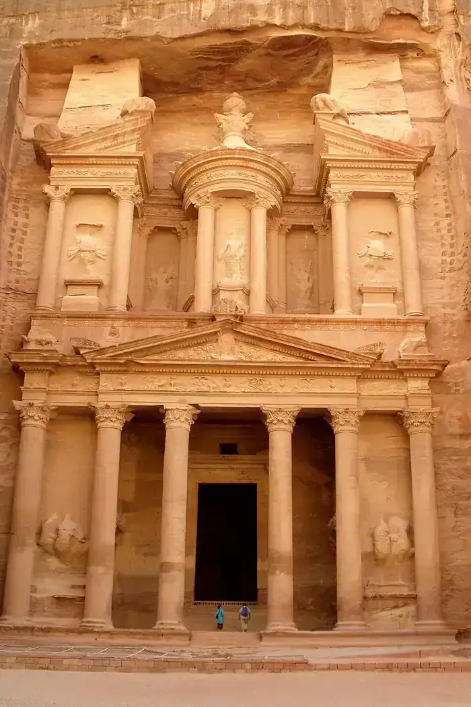
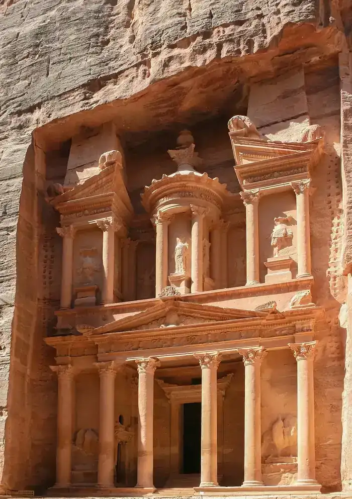
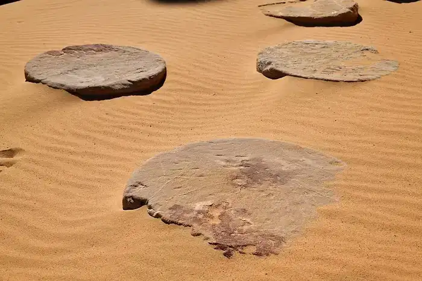

The tradition
Iram of the Pillars appears in the Qur'an as a city of a people destroyed for their arrogance, and became a byword in Arabic literature for a lost city in the sands — sometimes called Ubar or Wabar. The tradition includes stories of travellers who stumbled on its ruins.
Maps, diagrams and images






The archaeology
In the early 1990s a team using satellite imagery and local accounts excavated a site at Shisr in Oman, finding a large structure with eight-sided walls, a well and evidence of a caravan stop that had collapsed into a sinkhole. The site was identified with the legendary Ubar/Iram and publicised widely.
The identification is plausible but not settled: the site is a caravan city of the right region and period, and the link to the legendary city is an interpretation.
Documented: the text and the later traditions.
Documented: the excavation at Shisr.
Contested: the identification with Iram/Ubar.
Plausible: a caravan city of the right region.
The honest label: live debate.
Why it is in the archive
Because it is a legend that produced a real excavation, and because the site is more interesting than the identification.
Open resources on this topic
- PapersOpen-access articles: DOAJ · PubMed Central · Internet Archive Scholar
- BooksPublic-domain and borrowable copies: Open Library · Project Gutenberg · Google Books · Internet Archive
Cite this page
Momin, S. (2026). Iram of the Pillars. The Larger World Archive. https://drsamonline.github.io/LARGE_GLOBE/iram-pillars.htmlMomin, Sohil. “Iram of the Pillars.” The Larger World Archive, 2026, https://drsamonline.github.io/LARGE_GLOBE/iram-pillars.html.Momin, Sohil. “Iram of the Pillars.” The Larger World Archive, 2026. https://drsamonline.github.io/LARGE_GLOBE/iram-pillars.html.@misc{iram2026iram,
author = {Momin, Sohil},
title = {Iram of the Pillars},
year = {2026},
howpublished = {The Larger World Archive},
url = {https://drsamonline.github.io/LARGE_GLOBE/iram-pillars.html},
note = {Last reviewed 20 November 2026}
}Last reviewed 20 November 2026 · Corrections policy · this page is not peer reviewed
Sources for this page
- Wikipedia, “Iram of the Pillars” — the traditionen.wikipedia.org
- Wikipedia, “Ubar” — the site and the excavationen.wikipedia.org
- Wikipedia, “Shisr” — the locationen.wikipedia.org
- Wikipedia, “Caravan city” — the contexten.wikipedia.org